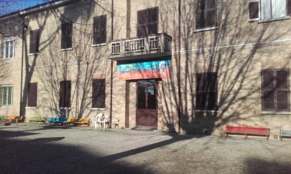
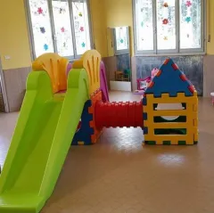
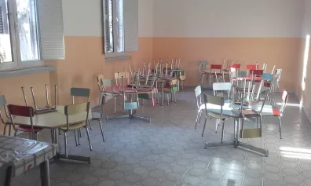

Galleria Fotografica
Alcuni scatti dei nostri spazi, dei laboratori e delle attività vissute dai bambini ogni giorno.
I Nostri Spazi
Gli ambienti del Polo d'Infanzia: l'ingresso, il salone giochi e il refettorio.



Laboratori Didattici
Momenti tratti dalle nostre attività grafiche, manipolative, musicali e sensoriali.

Altre foto in arrivo
Altre foto in arrivo
Feste ed Eventi
I momenti comunitari che segnano l'anno scolastico: feste di Natale, fine anno scolastico e ritrovi con le famiglie.
Foto Eventi in arrivo
Foto Eventi in arrivo
Foto Eventi in arrivo
Il Giardino
Il nostro cortile esterno con giochi all'aperto e le aree verdi per l'esplorazione naturale.
Foto Giardino in arrivo
Foto Giardino in arrivo
Foto Giardino in arrivo
Nota sulla Privacy: Nel rispetto delle normative a tutela dei minori, pubblichiamo solo fotografie in cui i bambini non sono direttamente riconoscibili, o per le quali abbiamo ottenuto esplicita liberatoria dalle famiglie per l'uso istituzionale.